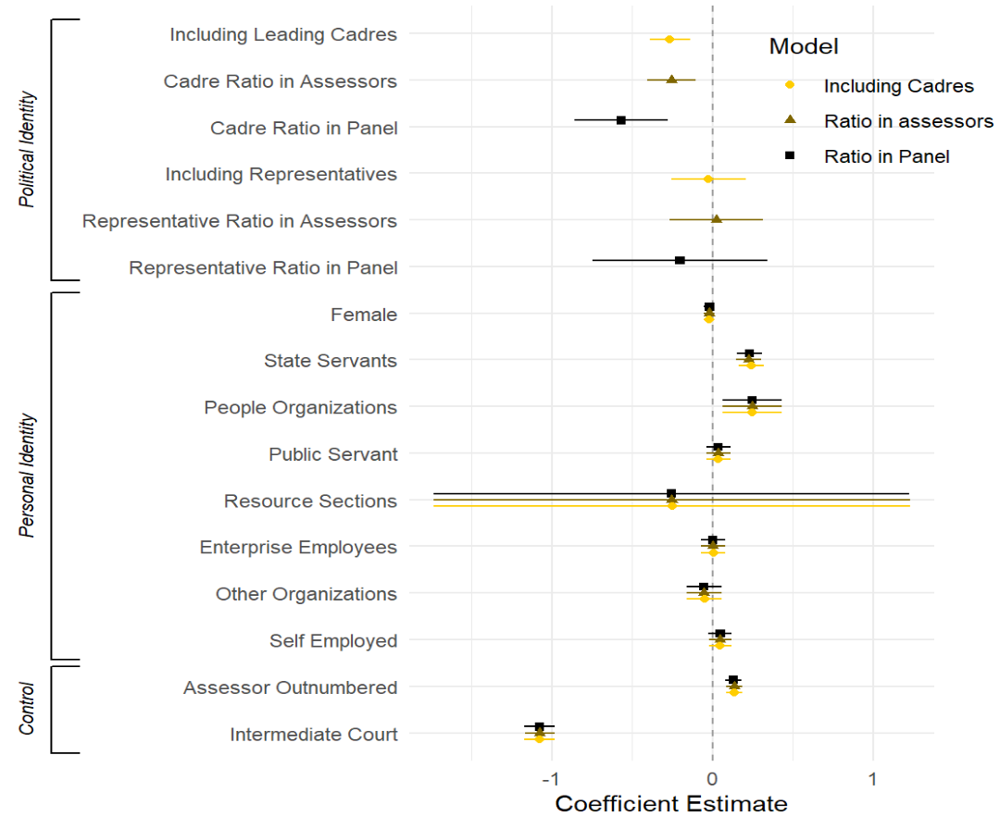
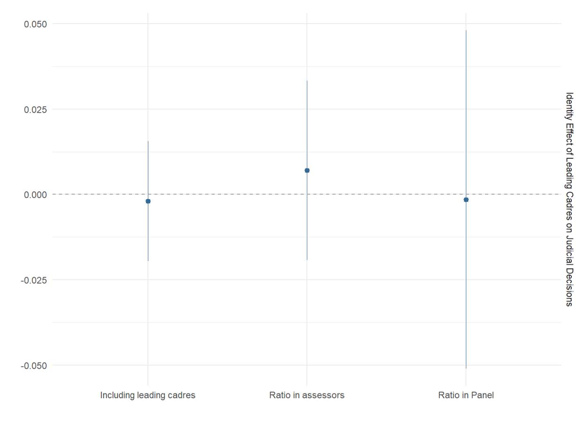
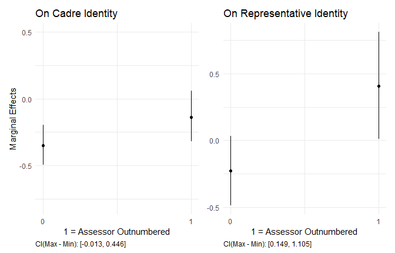

Identity Politics in Chinese Courts
A Political-Psychological Explanation
Yue Hu
Tsinghua University
Yi Shu
Tsinghua University
Xiaohong Yu
Tsinghua University
2022-12-03
TL;DR
- Object
- Identity influence in judicial politics
- Theory: Trigger + amplifier effect
- Design: Big data + econometrics
- Finding
- Significant and specific triggered
- Amplifier effect works but restrictively
- Conclusion
- Effect: Politics influences judicial decisions
- Not only in a common-law society
- Not only through judges
- Not only based on essentialist identities
- Mechanism: Identity influences are conditional
- Empirics: Identity politics in Chinese courts
- Effect: Politics influences judicial decisions
Research Puzzle
Literature shows
- Essentialist identities (gender, race) matter
- Social movements (Bernstein 2005)
- Representative bureaucracy (Li 2020; Peters and Arnesen 2017; Wilkins and Keiser 2006)
- Identity in judicial process
Literature doesn’t answer

Context: Lay Assessor System
- A mixed tribunal that resembles the German model
- People’s assessors
- Local courts decide whether and how many in the panel
- Randomly selected and assigned
- Same power as the judges to determine the decision
- Academic debates
Context: Cadres and Representatives in Administrative Litigation (AL)
- AL: “Frail weapon” (Finder 1989; O’Brien and Li 2004)
- Leading cadres & representatives
- Cadres: Chief and deputies above township level
- Representatives: People’s Congresses (PCs) and the People’s Political Consultative Conferences (PPCCs)
- Who do they stay with, citizens or mandarins?
Theoretical Frame
An alternative view of identity:
Embedded identity vs. detached identity
- Multi-identity setting
- Leading cadre (embedded)
- Representatives (detached)
- Beyond political culture and environment
- More vs. less appeared in sociopolitical interactions
- ⇒ easy vs. hard to be triggered
Theoretical Hypotheses

H1: Assessors’ official identity, rather than others, are more likely to associate with a court decision in favor of the government.

H2: The official assessors’ influence on the court decisions is larger when they are outnumbered.
Research Design
- Data sources
- People’s assessor: China Judicial Process Information Online
- 69,322 assessors in court cases from 2017-02 to 2022-03
- Judicial decisions
- Chinese Judicial Political Dataset (CLJD)
- 57,688 AL cases
- Chinese Judicial Political Dataset (CLJD)
- People’s assessor: China Judicial Process Information Online
- Model
- OV: Winning odds (0 fail, 1 win)
- EV: Including cadres(representatives)/assessor ratio/panel ratio
- Adjust:
- Assessor personal identity (gender and occupation types)
- Court property (assessor outnumbered, intermediate court)
Data Collection
- Name-court matching
- 7,275 assessors
- 92,569 assessor-case dyads.
- Long Short-Term Memory Convolutional Neural Network algorithm in TensorFlow and Viterbi framework
- Precision rate: 100%, Recall rate: 99.71%, F1: 99.86%.
Empirical Findings

Placebo Test
- 1,945,362 criminal cases

Amplifier Effect

Conclusions
Lit hasn’t answered:
- Multi-identity
- Identity effect is more than gender, race, and ideology
- When and how beyond where:
- Trigger
- Amplifier
- Judicial Politics in Non-Common Law System
- Identity effect in Chinese courtrooms
- Politics in courts through identity
Reference
Anwar, Shamena, Patrick Bayer, and Randi Hjalmarsson. 2012. “The Impact of Jury Race in Criminal Trials.” The Quarterly Journal of Economics 127 (2): 1017–55.
Ashenfelter, Orley, Theodore Eisenberg, and Stewart J. Schwab. 1995. “Politics and the Judiciary: The Influence of Judicial Background on Case Outcomes.” The Journal of Legal Studies 24 (2): 257–81.
Bernstein, Mary. 2005. “Identity Politics.” Annual Review of Sociology 31 (1): 47–74. https://doi.org/10.1146/annurev.soc.29.010202.100054.
Cohen, Alma, and Crystal S. Yang. 2019. “Judicial Politics and Sentencing Decisions.” American Economic Journal: Economic Policy 11 (1): 160–91.
Epstein, Lee, Andrew D. Martin, Jeffrey A. Segal, and Chad Westerland. 2007. “The Judicial Common Space.” The Journal of Law, Economics, and Organization 23 (2): 303–25.
Finder, Susan. 1989. “Like Throwing an Egg Against a Stone Litigation in the People’s Republic of CHina” 3: 1.
Hoekstra, Mark, and Brittany Street. 2021. “The Effect of Own-Gender Jurors on Conviction Rates.” The Journal of Law and Economics 64 (3): 513–37.
Li, Huafang. 2020. “Coproduction: Past, Present, and Future.”
Maeder, Evelyn M., Susan Yamamoto, and Laura A. McManus. 2018. “Methodology Matters: Comparing Sample Types and Data Collection Methods in a Juror Decision-Making Study on the Influence of Defendant Race.” Psychology, Crime & Law 24 (7): 687–702.
O’Brien, Kevin J., and Lianjiang Li. 2004. “Suing the Local State: Administrative Litigation in Rural China.” The China Journal, 75–96.
Peters, Yvette, and Sveinung Arnesen. 2017. “The Legitimacy of Representation: How Descriptive, Formal, and Responsiveness Representation Affect the Acceptability of Political Decisions.”
Segal, Jeffrey Allan, and Harold J. Spaeth. 2002. The Supreme Court and the Attitudinal Model Revisited. Cambridge, UK; New York: Cambridge University Press.
Steffensmeier, Darrell, and Chester L. Britt. 2001. “Judges’ Race and Judicial Decision Making: Do Black Judges Sentence Differently?” Social Science Quarterly 82 (4): 749–64.
Wilkins, Vicky M., and Lael R. Keiser. 2006. “Linking Passive and Active Representation by Gender: The Case of Child Support Agencies.” Journal of Public Administration Research and Theory 16 (1): 87–102.